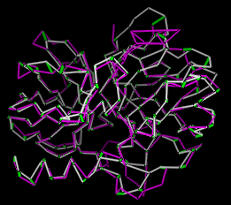
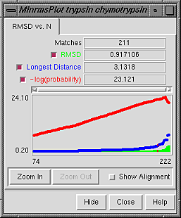

Minrms Plot displays results from the separate program MinRMS, which generates a series of structural alignments (superpositions) of two protein structures. MinRMS is a stand-alone, nongraphical program that is run from the system command line, not from within Chimera. It is not included with Chimera, but is available for download in source code form.
 Briefly, MinRMS creates many superpositions of the same two structures differing in the number of residues paired; for a given number of pairings, the superposition is that which minimizes the RMSD. The nth entry of the "lowest-RMSD list" consists of a structural alignment and the n residue pairings within it used to calculate the RMSD. Each list item can be expressed as a sequence alignment in MSF format (file alignn.msf); the corresponding rotation/translation information is included in the comments. The n residue pairings are aligned in sequence within the MSF file.
Minrms Plot graphs the numerical results, shows the structural alignments, and calls Multalign Viewer to show the corresponding sequence alignments.
There are several ways to start Minrms Plot, a tool in the Structure Comparison category. Starting Minrms Plot brings up a dialog box requesting the file align_chimera.info previously created by MinRMS. This file lists pdb1 and pdb2 (the names of the two PDB files), the name of the plot data file (currently just align_chimera.plot), and the number of alignment files to be read.
 Upon reading the file, Chimera will display the molecules in pdb1 and pdb2 in the graphics window and open an additional Minrms Plot window containing a graph. Initially, the molecules are not superimposed (and may not both be visible); their positions depend on the coordinates in the input PDB files. Showing just the backbone or chain trace of proteins is recommended to simplify the display.
The RMSD vs. N graph depicts the members of the "lowest-RMSD list" of structural alignments that have been written out as MSF files. RMSD is shown in green, the longest distance between paired residues in blue, and an adaptation of the Levitt-Gerstein probability score in red versus increasing number of residue pairings, or "matches." The -log(probability) is shown, where probability represents the likelihood that such a favorable superposition could be attained by chance (proteins not structurally related); larger values of -log(probability) indicate greater significance. Clicking with the mouse within this graph determines which structural alignment is displayed in the graphics window. In the figure, the graph has been clicked to choose the alignment with 211 residue pairs (matches). Zoom In expands the graph to show a smaller range of N in the same area; Zoom Out reverses this.
Show Alignment indicates that the sequence alignment corresponding to the current structural alignment should be shown in Multalign Viewer. When the structural alignment is changed by clicking on the graph, Multalign Viewer will automatically switch to the corresponding sequence alignment.
Hide dismisses the interface without exiting from Minrms Plot. When the Minrms Plot interface is hidden or obscured by other windows, it can be resurrected using the Raise option for the Minrms Plot instance in the Tools menu. Close closes the Minrms Plot window, and Help opens this manual page in a browser window.
The structure in pdb1 is static (unless moved interactively by the user) and the structure in pdb2 is reoriented relative to the first. Residue pairings are indicated with green pseudobonds in the graphics window.